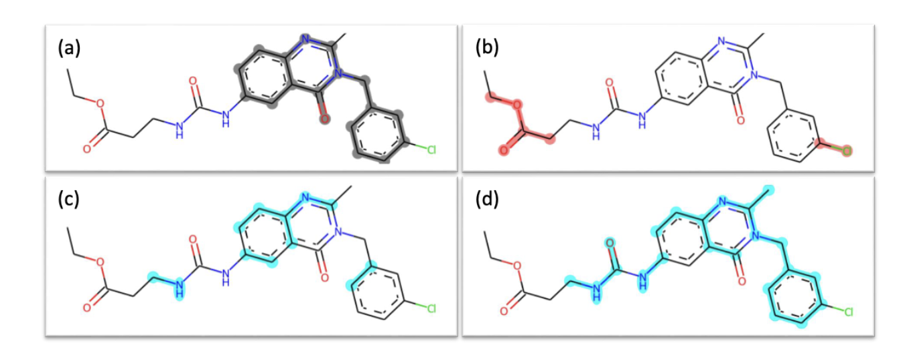
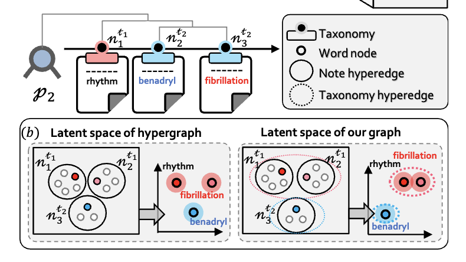
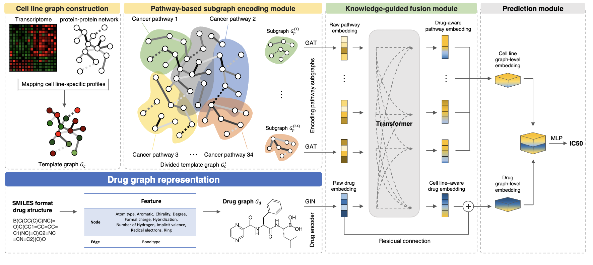
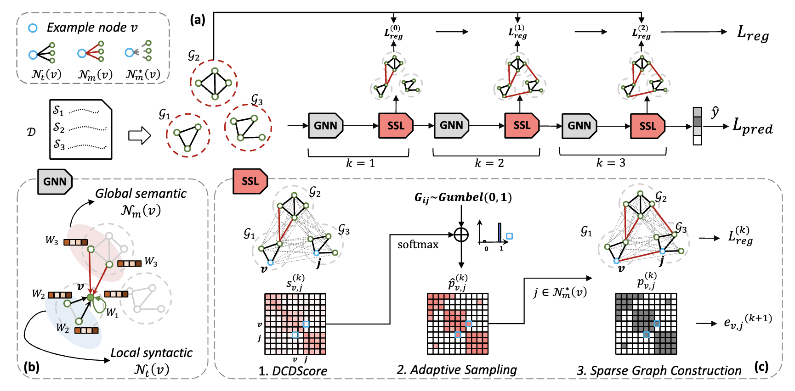

Hi, I'm Yinhua
I'm a postdoctoral fellow at the Innocore AI-CRED Institute, KAIST, advised by Prof. Sungsoo Ahn and Prof. Woo Youn Kim. I did my PhD in Computer Science at Seoul National University with Prof. Sun Kim, where my dissertation on subgraph-informed hierarchical learning received the Outstanding Doctoral Dissertation Award.
I develop graph-based and multi-modal AI for drug discovery and biomedical reasoning, integrating molecular, cellular, sequential, textual, and knowledge-graph signals across the preclinical pipeline — with a growing focus on LLM-based scientific reasoning over biological knowledge.
Research Overview
Multi-modal integration for drug discovery
Coupling molecules with text, gene expression, and knowledge graphs.
View details →Robust & generalizable graph learning
Reliable under distribution shift and across domains.
View details →LLM agents for biological reasoning
Reasoning over biology to model how cells respond.
View details →I integrate the many signals of biology — molecules, cells, text, and knowledge graphs — into AI that generalizes beyond its training data, toward trustworthy, biology-grounded systems for drug discovery and personalized medicine.
News
- 2026.05AdaPert was accepted by ICML 2026.
- 2025.08A paper was accepted by EMNLP Findings 2025.
- 2025.08Started the AI-CRED postdoctoral fellowship at KAIST, advised by Prof. Sungsoo Ahn.
- 2025.05A paper was accepted by ICML 2025.
Show more
- 2025.04Two papers accepted by the MLGenX Workshop @ ICML 2025.
- 2025.03A paper accepted by IEEE TCBB 2025.
- 2025.02Won the Outstanding Doctoral Dissertation Award, CSE, SNU.
- 2024.12Successfully defended my PhD — "Subgraph-informed Hierarchical Learning in Clinical and Biomedical Domains."
- 2024.09Won the Youlchon AI Star Fellowship 2024.
- 2024.04One paper accepted by the Computational and Structural Biotechnology Journal 2024.
- 2024.02One paper accepted by CVPR 2024.
- 2024.02One paper accepted by the ICLR Tiny Paper track 2024.
- 2024.02Won the 30th Samsung HumanTech Paper Award.
Selected Publications




All publications
- ICML 2026Learning Adaptive Perturbation-Conditioned Contexts for Robust Transcriptional Response PredictionYinhua Piao, Hyomin Kim, Seonghwan Kim, Yunhak Oh, Junhyeok Jeon, Sang-Yeon Hwang, Jaechang Lim, Woo Youn Kim, Chanyoung Park, Sungsoo Ahn
- arXiv 2026Progressive Multi-Agent Reasoning for Biological Perturbation PredictionHyomin Kim, Sang-Yeon Hwang, Jaechang Lim, Yinhua Piao, Yunhak Oh, Woo Youn Kim, Chanyoung Park, Sungsoo Ahn, Junhyeok Jeon
- EMNLP 2025MV-CLAM: Multi-View Molecular Interpretation with Cross-Modal Projection via Language ModelSumin Ha*, Jun Hyeong Kim*, Yinhua Piao, Changyun Cho, Sun Kim
- JCIM 2025Improving Reaction Yield Prediction with Chemical Atom-Level Reaction LearningYijingxiu Lu, Yinhua Piao, Ming Shen, Sun Kim
- ICML 2025Predicting Drug-likeness via Biomedical Knowledge Alignment and EM-like One-Class Boundary OptimizationDongmin Bang, Inyoung Sung, Yinhua Piao, Sangseon Lee, Sun Kim
- ICLRw 2025Aligning Molecules and Fragments in a Shared Embedding Space for RL-Based Molecule GenerationYoungkuk Kim, Yinhua Piao, Sangseon Lee, Sun Kim
- TCBB 2025Context-Aware Hierarchical Fusion for Drug Relational LearningYijingxiu Lu, Yinhua Piao, Sangseon Lee, Sun Kim
- CSBJ 2024Multi-layered Knowledge Graph Neural Network Reveals Pathway-level Agreement of Three Breast Cancer Multi-gene AssaysSangseon Lee*, Joonhyeong Park*, Yinhua Piao, Dohoon Lee, Danyeong Lee, Sun Kim
- CVPR 2024Improving Out-of-Distribution Generalization in Graphs via Hierarchical Semantic EnvironmentsYinhua Piao, Sangseon Lee, Yijingxiu Lu, Sun Kim · Project
- ICLR 2024Enhancing Drug-Drug Interaction Prediction with Context-Aware Architecture (Tiny Paper)Yijingxiu Lu, Yinhua Piao, Sun Kim · Project
- CSBJ 2023Exploring Chemical Space for Lead Identification by Propagating on Chemical Similarity NetworkJungseob Yi, Sangseon Lee, Sangsoo Lim, Changyun Cho, Yinhua Piao, Marie Yeo, Dongkyu Kim, Sun Kim, Sunho Lee · Project
- ACL 2023Clinical Note Owns its Hierarchy: Multi-Level Hypergraph Neural Networks for Patient-Level Representation Learning (Long, Oral)Nayeon Kim*, Yinhua Piao*, Sun Kim · Project
- IJMS 2022DRPreter: Interpretable Anticancer Drug Response Prediction Using Knowledge-Guided Graph Neural Networks and TransformerJihye Shin*, Yinhua Piao*, Dongmin Bang, Sun Kim, Kyuri Jo · Project
- NeurIPS 2022SPGP: Structure Prototype Guided Graph PoolingSangseon Lee, Dohoon Lee, Yinhua Piao, Sun Kim
- CSBJ 2022On Modeling and Utilizing Chemical Compound Information with Deep Learning Technologies: A Task-Oriented ApproachSangsoo Lim, Sangseon Lee, Yinhua Piao, MinGyu Choi, Dongmin Bang, Jeonghyeon Gu, Sun Kim
- AAAI 2022Sparse Structure Learning via Graph Neural Networks for Inductive Document ClassificationYinhua Piao, Sangseon Lee, Dohoon Lee, Sun Kim · Project
- Math. 2022Graph Convolutional Network for Drug Response Prediction Using Gene Expression DataSeonghun Kim, Seockhun Bae, Yinhua Piao, Kyuri Jo · Project
Honors & Awards
- 2025.02Outstanding Doctoral Dissertation Award, CSE, SNU.
- 2024.09Youlchon AI Star Fellowship.
- 2024.0230th Samsung HumanTech Paper Award.
- 2022.0927th Samsung HumanTech Paper Award (Bronze). [link]
- 2022.04AIIS Retreat Best Poster Award. [link]
- 2022.02AAAI Student Scholar Scholarship.
- 2020–22SNU Global Scholarships II. [link]
Education
- 2020–24Ph.D. in Computer Science, Seoul National University.
- 2018–20M.S. in Computer Science, Seoul National University.
- 2014–18B.S. in Software Engineering, Jilin University.